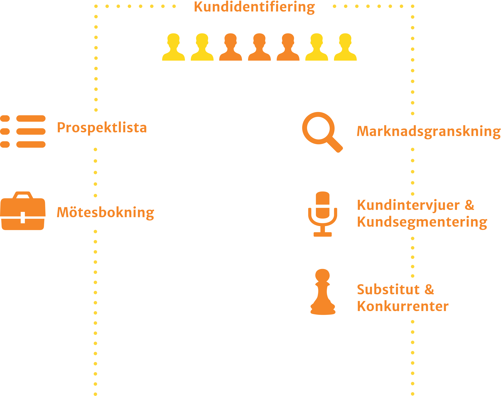

Om oss
Vad vore världen utan visionärer, människor som vågar drömma och dessutom har ambitionen att omvandla dröm till verklighet?
Vi på Inntrion tillhandahåller verktygen för att omvandla svensk forskning till spirande företag. Inntrion matchar svenska forskningsresultat med potentiella kunder och samarbetspartners för att öka konkurrenskraften hos svenska bolag och skapa framgångsrika forskningsavknoppningar.
Kundidentifiering utgör grunden i vårt erbjudande. Oavsett om du söker pilotkunder eller vill utöka din befintliga kundstock, bidrar Inntrion med nya värdefulla kontakter. Kontakter som kan ge information om den aktuella marknaden och som har potential att resultera i intäkter och värdefulla kundrelationer över tid.

Teknik
This is some text.his is some text.in befintliga kundstock, bidrar Inntrion med nya värdefulla kontakter. Kontakter som kan ge information om den aktuella marknaden och som har potential att resultera i intäkter och värdefulla kundrelationin befintliga kundstock, bidrar Inntrion med nya värdefulla kontakter. Kontakter som kan ge information om den aktuella marknaden och som har potential att resultera i intäkter och värdefulla kundrelationin befintliga kundstock, bidrar Inntrion med nya värdefulla kontakter. Kontakter som kan ge information om den aktuella marknaden och som har potential att resultera i intäkter och värdefulla kundrelation
Marknad
Vi är framgångsrika på att göra marknadsundersökningar
Mötesbokning
Svårt att identifiera nya kunder? Inntrions mötesbokningstjänst hjälper dig att skaffa dina första betalande kunder eller att utöka den befintliga kundstocken. Genom förståelse för uppdragsgivarens situation och mål med kommersialiseringen tar Inntrion fram en lista över de mest intressanta kunderna. Med de allra mest intressanta av dessa bokar vi dessutom säljmöten.Marknadsanalys
Inntrions marknadsanalyser utgår från intervjuer med potentiella kunder. Baserat på intervjuerna och NABC-metodiken skapar vi en överblick av ditt projekts förutsättningar på marknaden – komplett med både kundsegmentering och en grundligt genomförd konkurrensanalys anpassad utifrån ert företags bransch och möjligheter.Referenser
Ett urval av våra kunder.


Vårt team
Det är vi som är Inntrion.

Billy Fransson
Konsult
Address
-
Inntrion AB
Mjärdevi Center
Teknikringen 10, 583 30, Linköping Email
- kontakt@inntrion.com
Telefon
- 073-526 1276